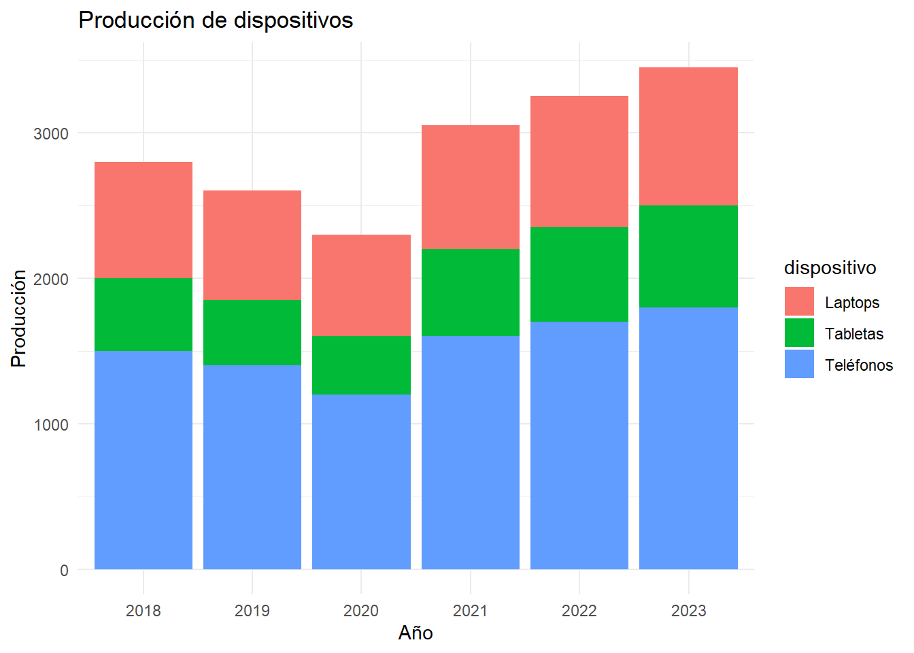

Recursos
10 de febrero de 2025
Nota: Este sitio es colaborativo y está en construcción continua, envíanos tus propuestas de contenido: videos, tutoriales, materiales, libros, reseñas.
Información
- Elaboró: Dra. Daniela Serrano Campos
- Email: daniela.serrano@inegi.org.mx (por favor pon ‘HFACVDG’ en el asunto)
Descripción general y objetivos del Hub
2024 | 8 | 07 Última actualización: 2025-02-10
Este sitio provee de herramientas, guías, manuales y recursos para la visualización y comunicación efectiva y ciudadada de datos de gobierno.
Objetivos
- Programación básica en R: uso de variables, paquetes, espacios de
trabajo…
- Transformación de datos: procesamiento de archivos de datos para un
análisis deseado.
- Visualización de datos: representación gráfica.
- Comunicación de la investigación: cómo utilizar los scripts de R
Markdown para crear manuscritos correctamente referenciados para
comunicar la investigación.
- Investigación reproducible: principios de la ciencia abierta, incluidas herramientas para compartir datos, compartir manuscritos, diseños de investigación, compartir métodos.
¿Cómo seleccionar la gráfica adecuada para tu análisis?
üåü Data to Viz: Gu√≠a para la Visualizaci√≥n de Datos
Data to Viz es una herramienta que clasifica los tipos de gráficos según el formato de los datos de entrada. Utiliza un árbol de decisión que orienta hacia las visualizaciones más adecuadas para representar un conjunto de datos.
üìå Principios clave:
1️⃣ La mayoría de los análisis de datos pueden resumirse en unos veinte
formatos de dataset.
2️⃣ Tanto los datos como su contexto determinan el gráfico adecuado.
üîç M√©todo sugerido: Identificar y probar todas las visualizaciones viables para elegir la mejor opci√≥n.
üí° data-to-viz.com ayuda a seleccionar el mejor gráfico, se√±ala errores comunes y proporciona c√≥digo reproducible en R.
üöÄ Aunque el mundo de la dataviz es infinito, este proyecto es un excelente punto de partida.

Lecturas
- Bunge,
M. (2000). La Investigación científica su estrategia y su filosofía.
Barcelona: S.XXI.
- Martínez
Valdes, Gustavo AND Huerta Silva, José Luis AND Lara Escalante, Mónica
(2024). Gestión de la información para el análisis político. México:
UNAM-FCPyS.
- Gerring,
J. (2014). Metodología de las ciencias sociales. Madrid:
Alianza.
- Guía definitiva para todo lo relacionado con R Markdown (la encontrarás muy útil a medida que mejores en esta habilidad.
Iremos agregando material de R, como el que se muestra:
Tal vez quieras tomar una muestra de 100 números de una distribución normal con media = 0 y desviación estándar = 1, y luego quieres trazar un histograma. Puedes hacer esto aquí mismo usando un bloque de código r, como este:
muestras <- rnorm(100, mean=0, sd=1)
hist(muestras)